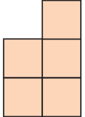
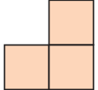
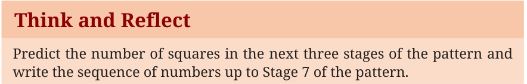
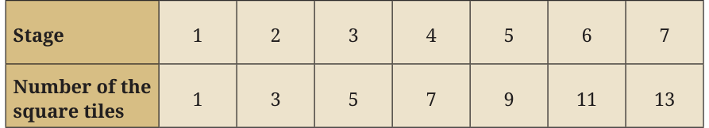
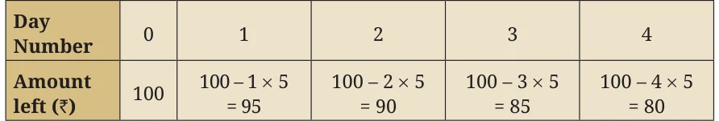
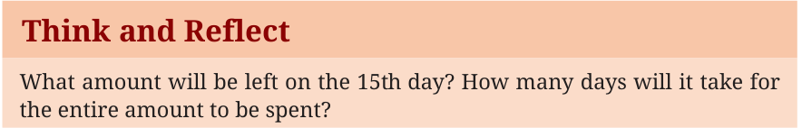

Observe the following growing pattern of square tiles.



Stage 1 Stage 2 Stage 3 Stage 4
Think and Reflect
Predict the number of squares in the next three stages of the pattern and write the sequence of numbers up to Stage 7 of the pattern.

Each stage is obtained by adding two more tiles to the previous stage. The table mentions the number of tiles for the first seven stages.

To generalise this pattern, we observe that the number of squares at each stage is one less than twice the number of the term. For example, in Term 2, the number of squares is \(2 \times 2 - 1 = 3\), in Term 5, the number of squares is \(2 \times 5 - 1 = 9\) and so on. This leads us to conclude that the number of squares at Stage n is given by \(2n - 1\). The polynomial \(2n - 1\) has degree 1. Hence, it is an example of a linear polynomial. Also, the difference between consecutive terms in the sequence of the number of squares, that is, 1, 3, 5, 7, 9 … is the constant value 2. Thus, with each stage, the number of squares increases by 2. The relationship between the number of the stage and the number of square tiles is a linear relationship.
Think and Reflect
Using the expression \(2n - 1\), can you find out how many tiles will be there in the 15th stage and the 26th stage of the pattern? Also, which stage will contain 21 tiles and 47 tiles?
Example 7: Bela has ₹100 for pocket money. She spends ₹5 every day. After how many days will she be left with ₹40?

Observe that the amount left on the \(n^{th}\) day will be ₹\((100 - 5n)\). Therefore, on the 12th day the amount left will be ₹\((100 - 12 \times 5) =\) ₹40.
Think and Reflect
What amount will be left on the 15th day? How many days will it take for the entire amount to be spent?

Example 8: An auto-rikshaw fare starts at ₹25 and remains the same for the initial 2 km. Then it increases by ₹15 per km. What will be the fare for a travel of 10 km?
For the initial 2 km, the fare is ₹25. For every kilometre (km) thereafter, the fare will increase by ₹15. Therefore, the total fare for a travel of 10 km will be ₹25 \(+ 15 \times 8 =\) ₹145.

Observe that the total fare for a travel of \(n\) km will be ₹\(25 + 15 \times (n - 2) = 15n - 5\), when \(n \ge 2\). Here, the fare for a specific distance covered is a function of the distance \(n\) km.
Think and Reflect
For how many km will the fare be ₹130?

Note that in all the above examples, the \(n^{\text{th}}\) term is a linear expression in \(n\). A linear pattern is a sequence of numbers where the difference between two consecutive terms is constant. We will learn more about linear patterns in the chapter on Sequences and Progressions.

Solve the following:
- A student has ₹500 in her savings bank account. She gets ₹150 every month as pocket money. How much money will she have at the end of every month from the second month onwards? Find a linear expression to represent the amount she will have in the \(n^{th}\) month.